2017
МАЙ 2017
Передача территории на ул. Сосновая
Гимназии была передана территория бывшего детского сада на улице Сосновая. Именно с этого момента началась масштабная работа по созданию современного образовательного комплекса.


От первого корпуса до современного духовно-образовательного комплекса. Путь созидания, веры и развития.
Как строилась и менялась гимназия с 2017 года
Гимназии была передана территория бывшего детского сада на улице Сосновая. Именно с этого момента началась масштабная работа по созданию современного образовательного комплекса.
Завершилась реконструкция учебного здания для средних и старших классов на 112 учащихся. А 4 декабря состоялось торжественное открытие первой школьной библиотеки.
При поддержке попечителей заложен фундамент и возведен спортивный корпус (45×18 м) с актовым залом на 2 этаже, а также выстроен и освящен новый алтарь храма.
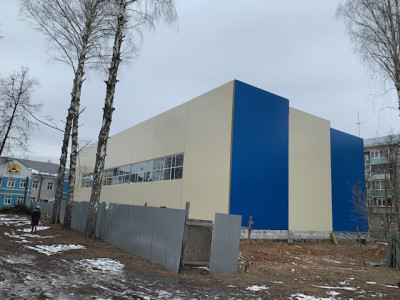
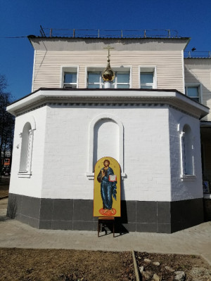
Старт строительства храма на пожертвования жителей с закладкой именных кирпичей. 1 сентября 2022 года митрополит Тихон и епископ Стефан освятили новый храм.
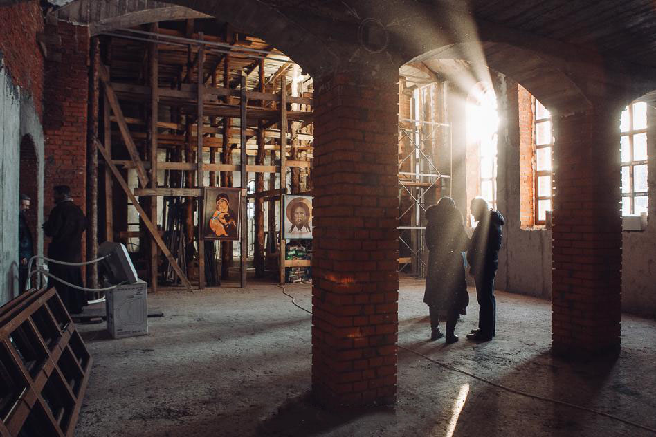
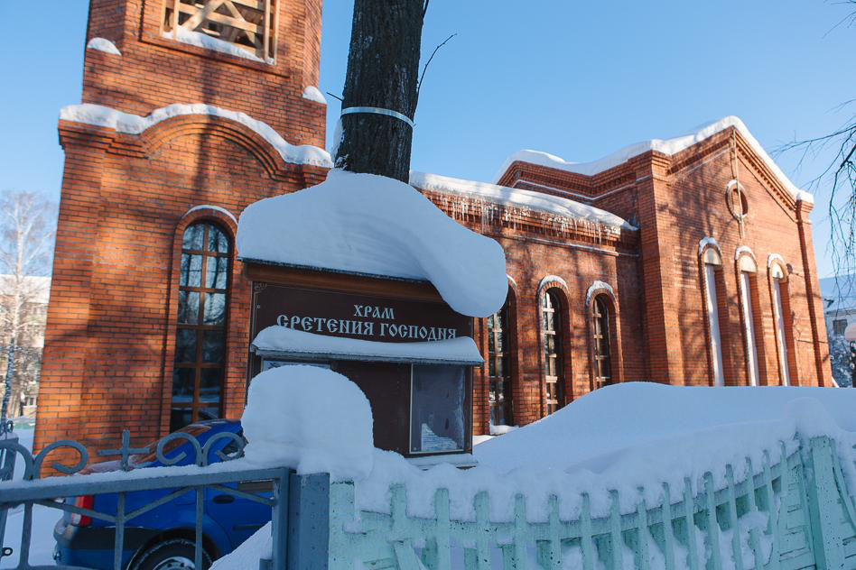
Старт возведения двухэтажного здания-галереи между спортзалом и Покровским корпусом. В нем предусмотрены новый пищеблок, гардеробы, классы и библиотека.
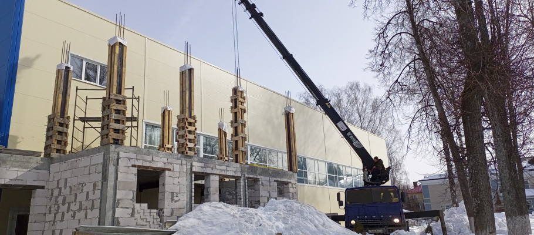
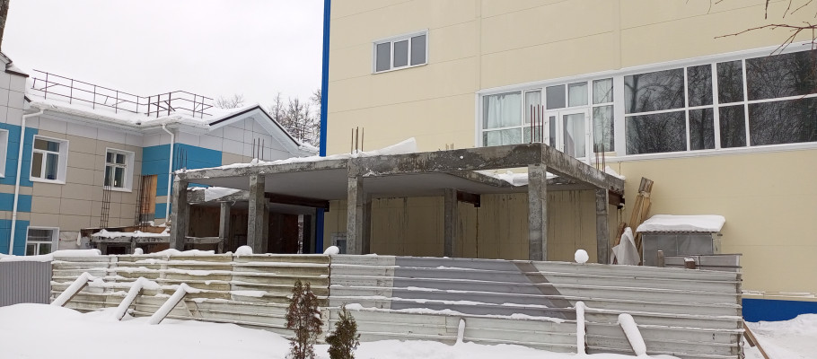
Митрополит Никандр освятил новую библиотеку на 2-м этаже Архангельского корпуса и передал в дар собрание трудов равноапостольного Николая Японского.
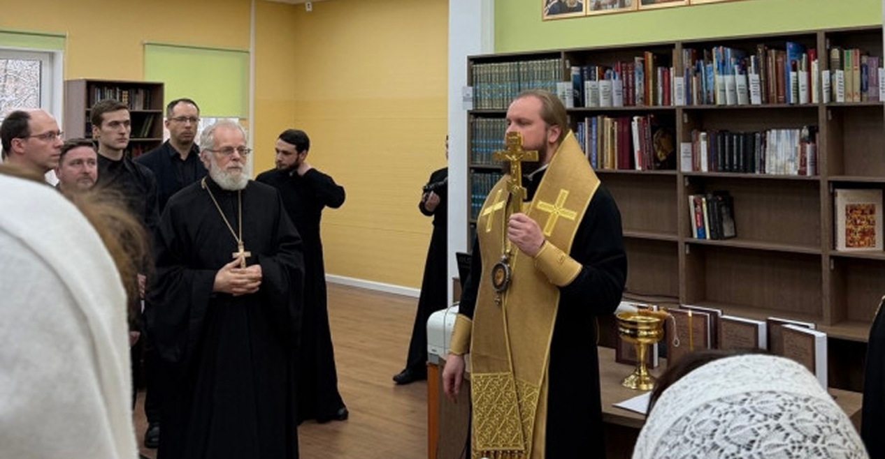
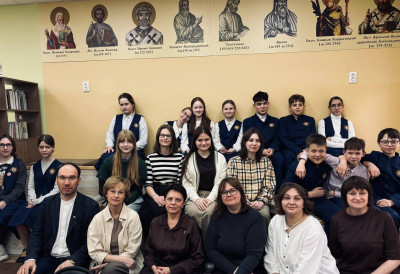
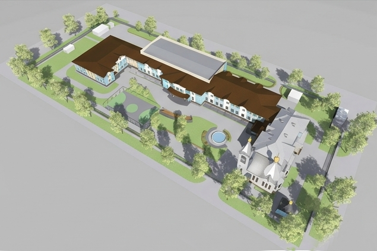
Территория площадью 1 ГА в спальном районе города, объединяющая учебные корпуса, спортивное ядро и храм в единую экосистему.
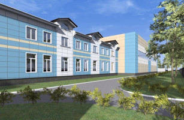
В проекте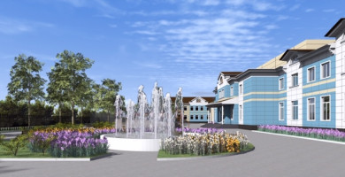
В проектеСтроительство корпусов, храма и развитие гимназии стали возможны благодаря поддержке неравнодушных организаций, попечительского совета и жителей города, пожертвовавших на именные кирпичи.